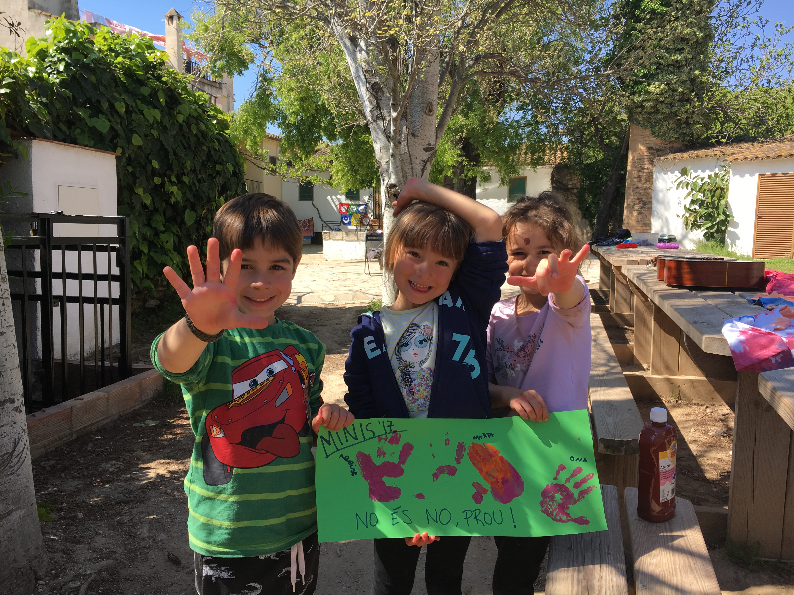

Si tens majoria de respostes A, la teva entitat és...
Bravo, t’ha tocat la millor entitat de les Corts. El teu lloc preferit del barri és el Fortuna (sempre, mai el timbre) i ets una enxixada de manual, però sempre t’enganxen per fer ses feines que ningú vol fer. Has anat més pics a Enigma que l'Anita (mai fallaries el nom de fuegote) i per tu els dissabtes només signifiquen una cosa. Això sí, que no et telefonin mai per fer una agitació, lo teu són els túnels de la por i els trivials.
